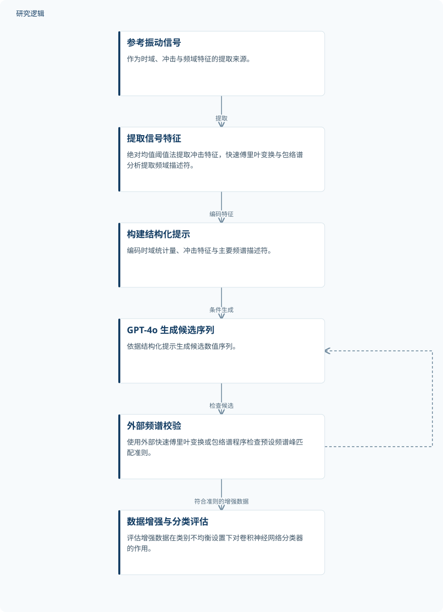

摘要解读
基于大语言模型与频域特征引导数据增强的旋转机械故障诊断方法
A rotating machinery fault diagnosis method based on large language models and frequency-domain feature-guided data augmentation
解读更新 2026-11-07 10:32 · 依据公开摘要整理，未核验全文细节
旋转机械故障样本不足、类别不均衡时，如何生成既保留故障特征、又能帮助分类的数据？这项研究将大语言模型与外部频谱校验结合，阅读价值在于看清“生成数值序列”与“验证故障特征”如何分工。
文章目录
补充故障数据，还要保留故障特征
研究针对故障样本稀缺、类别不均衡，以及传统生成模型的模式崩塌问题，提出面向旋转机械故障诊断的频域引导数据增强方法。其关注点不只是增加数据，而是让生成序列保留与故障机制相关的时域和频域特征。
结构化提示生成，外部频谱程序把关
研究先用绝对均值阈值法从振动信号提取瞬态冲击特征，再通过快速傅里叶变换和包络谱分析，提取代表不同故障机制的频域描述符。随后，将时域统计量、冲击特征和主要频谱描述符编码为结构化提示，引导 GPT-4o 生成候选数值序列。
关键约束并不只靠提示词实现。摘要明确说明，GPT-4o 在对话生成过程中并不执行显式可控的傅里叶分析，因此候选序列还须接受外部快速傅里叶变换或包络谱程序的检查。不满足预设频谱峰匹配准则的候选会被丢弃，并通过“生成—验证—反馈”过程重新生成。
依据摘要整理的频域引导数据增强流程


仅概括摘要明确陈述的特征提取、条件生成与外部校验关系，不是论文原图，不表示未报告的实验配置。
下载 SVG图示关系说明
实线表示相邻阶段的信息流，虚线表示跨阶段联系或反馈。
参考振动信号 → 提取信号特征：提取；提取信号特征 → 构建结构化提示：编码特征；构建结构化提示 → GPT-4o 生成候选序列：条件生成；GPT-4o 生成候选序列 → 外部频谱校验：检查候选；外部频谱校验 → GPT-4o 生成候选序列：不满足则丢弃并反馈再生成；外部频谱校验 → 数据增强与分类评估：符合准则的增强数据
轴承与转子案例中的信号相似性和分类收益
摘要报告，在轴承和转子案例中，生成数据与参考信号的时域波形形态、幅值范围及主要频谱峰在视觉上具有可比性。在所采用的类别不均衡设置下，该增强方法改善了下游卷积神经网络分类器的分类表现。
这些结果支持该方法在已评估案例中的故障数据增强用途。不过，视觉上的相似性不宜被解读为完整统计分布或全部故障机理的一致性；摘要也未给出分类性能提升的具体数值。
摘要尚不能界定收益大小与泛化边界
仅依据本次摘要，无法判断原始样本规模、各类样本分布、增强数据规模，以及训练与测试的划分方式；也无法确认比较方法、评价指标、重复验证与不确定性分析的具体安排。这些属于摘要未交代的信息，不能据此认定论文没有开展相关工作。
频谱峰匹配准则的具体定义、候选淘汰情况和反馈实现细节同样无法从摘要确定。目前可确认的验证范围是所报告的轴承与转子案例及其不均衡设置，不能直接推广为跨设备、跨工况或现场部署均已有效。
阅读启发：区分生成能力与校验能力
阅读启发：这项工作值得关注的是，大模型负责提出候选序列，外部信号分析程序负责检查明确的频谱约束。进一步阅读时，可重点追问：峰匹配如何定义，保留了哪些故障信息，信号层面的相似性又如何对应分类收益？这些问题有助于理解方法边界，而非预先认定其已解决模式崩塌或实现普遍泛化。
以上为本站阅读启发与建议，不是论文已验证的结论。